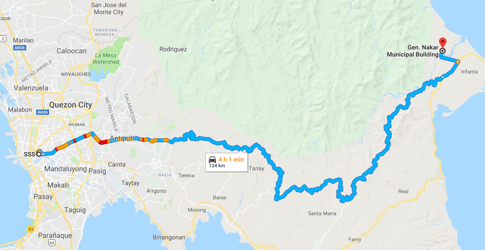

| Total Land Area | 162,613.3352 hectares |
|---|---|
| Forest | 151,342 hectares (93.1%) |
| A&D | 11,271 hectares (6.9%) |
| Households | 6,759 |
| Population | 29,512 |
| Males | 15,368 (52.1%) |
| Females | 14,144 (47.9%) |
| Population Density | 0.18/hectare |
Pinuno ng 1st Batallion 71st Infantry Division ng USAFFE na lumaban sa pwersang hapon sa Hilagang Luzon noong ikalwang digmaang pandaigdig.
Isinilang sa barrio Anoling, Infanta, Tayabas (ngayo'y Quezon), ika-10 ng Hunyo, 1906. Nagtapos sa Philippine Military Academy at naging kapitan ng Philippine Constabulary ng sumiklab ang Digmaan, 1941.
Nadakip sa Minuri, Jones, Isabela. Tumangging makipagtulungan sa Hapon. Dinala sa Maynila kung saan siya binitay, Setyembre 1942. Ginawaran ng ranggong Brigadier General ni Pangulong Elpidio Quirino, ika-21 ng Hulyo, 1949.
Ipinangalan sa kanya ang bagong bayan na GENERAL NAKAR, QUEZON, 1949 at ang SOUTHERN LUZON COMMAND sa Lucena bilang KAMPO HENERAL GUILLERMO NAKAR.
General Nakar is the northernmost municipality of Quezon Province. It is bounded on the north by the Municipality of Dingalan, Aurora, on the east by Polilio Strait, on the south by the municipalities of Real and Infanta, Quezon, and on the west by the Provinces of Rizal, Bulacan and Nueva Ecija. It lies geographically between 1210 8’ and 1210 42’ east longitudes, and 140 45’ and 150 20’ north latitudes.
General Nakar is the largest municipality of Quezon Province with 161,640 hectares land area. About 72.36 % of the municipality’s total land area is covered by barangays Umiray and Pagsangahan sharing 38.57 % and 33.79%, respectively.
The local people, headed by Forester Fortunato A. Avellano, had initiated the move for the creation of the Municipality of General Nakar through a petition paper. Such endeavor was realized, with the help of the late Congressman Fortunato Suarez and the late Governor Santayana of Quezon, when Executive Order No. 246 was signed by His Excellency, the late President Elpidio Quirino on 21 July 1949. The new town was curved out from Infanta, Quezon, which was its mother municipality then called “Distrito Pelagio” and was named in honor of the late Guillermo P. Nakar, a hero of World War II and a native of Barangay Anoling.
From its creation in 1949 to the present, the municipality of General Nakar has been administered by fourteen (14) mayors, viz: Hon. Agripino L. Quinto (appointed) 1949-1951 Hon. Catalino P. Ritual (elected) 1952-1955 Hon. Leon S. Ruidera, Sr.(elected) 1956-1964 Hon. Ildefonso P. Buendicho (elected) 1964-1972 Hon Abdon R. Cuerdo (elected) 1972-1986 Hon. Tranqulino R. Luzano (appointed) 1986-1988 Hon. Epiginio B. Pascual (appointed) 1988 Hon. Arturo R. dela Cruz (appointed) 1988 Hon. Calixto A. Ruidera (elected) 1988-1992 Hon. Hernando P. Avellaneda, Sr.(elected) 1992-2001 Hon. Leovegildo R. Ruzol (elected) 2001-2004 Hon. Hernando P. Avellaneda, Sr.(elected) 2004-2007 Hon. Leovegildo R. Ruzol (elected) 2007-2016 Hon. Eliseo R. Ruzol Sr. (elected) 2016-present.
General Nakar in Quezon Province, Philippines can be reached when you fly to the Philippines via aircraft to Manila via NAIA then through Manila East Road from Antipolo Rizal to Famy, Laguna thence to Famy-Infanta Road. From Infanta is about 3km national road to Infanta-General Nakar Bridge that stretches across the Agos River. An alternate route to Gen. Nakar is through Marcos Highway via Marikina-Infanta-General Nakar.
To experience the natural beauty of General Nakar, Pamplona-Catablingan Beaches is the best place to visit. You can relax and enjoy your vacation while experiencing its 3.74 km length, the dark blue water, beach line with coconut trees and clean sand make it the perfect beach. There are different resorts provides for most of a vacationer's needs while remaining on the premises (lodging, swimming fool, food, drink, sports, entertainment, shopping, etc.)
| Location | Brgy. Pamplona & Brgy. Catablingan |
|---|---|
| Distance from Municipal Hall | 5km |
| Activities | Sea bathing, jogging, taking picture, walking, surfing, sand castle, boating, kayaking, volleyball, kite-flying, watching sunrise, watching sunset, fishing, camping, picnicking and beach wedding |
| Est. Area for Tourist Staging | 29 hectares |
Municipal Ground of Gen. Nakar provides a wide landscape for different event. The Municipal Building itself already gives tourist an impression of beauty and a flashback of history by merely looking at Gen. Guillermo’s Monument, the town’s Hero. Also, here you can find the Tourism information desk and the Pasalubong center.
| Location | Brgy. Anoling |
|---|---|
| Distance from Municipal Hall | 0km |
| Activities | Gapo at Palusong festival, motocross, concert, flag ceremony, parade, walking, jogging, biking, taking picture, camping and buying souvenirs |
| Est. Area for Tourist Staging | 1.23 hectares ground for motocross activity; 0.65 hectares municipal ground facade |
Tourists will experience the long journey to the end of General Nakar’s town while eyes are satisfied with the beautiful and unique natural landscape. This is also where the Brusko Pacific Coast Epic Race/ Sandugo Pacific Coast Ultra 100 and Motorbike racing game is held. etc.
| Location | Brgy. Anoling, Brgy. Magsikap, Brgy. San Marcelino, Brgy. Sablang, Brgy. Maligaya, Brgy. Canaway, and Brgy. Umiray |
|---|---|
| Distance from Municipal Hall | 316km |
| Activities | Road trip, biking, jogging, walking, exploring, taking picture and motocross |
| Est. Area for Tourist Staging | 316 road length km |
Tinipak Collective Attraction Sites are the most popular tourist destination in General Nakar and most visited by the tourist, a hidden gem that boasts white marbled rocks and pristine water. Here are also the various attractions sites like falls, summit, rock formation, hot spring, camping ground and room accommodation establishment that will provide a delight experience which will bring back tourists.
| Location | Brgy. Pagsangahan |
|---|---|
| Distance from Municipal Hall | 118km |
| Activities | Road trip, biking, jogging, walking, exploring, taking picture and motocross |
| Est. Area for Tourist Staging | 2.37 hectares Tinipak River; 3.3 hectares Summit |
| Barangay | Passenger Capacity | Half Day | Whole Day | Remarks |
|---|---|---|---|---|
| Boatman/Bankero | Jet Sollano
Roonie Rillion Jessie Flora Edgar Sollano Milbert Ritual | |||
| Contact Person | Roberto Ritual (09096206421) | |||
| Magsikap Proper (Anibungan) | 8-12 pax | ₱ 1,000.00 | ₱ 1,500.00 | depende sa pakikipag-usap sa driver, depende sa laki ng banka, at may dagdag na bayad para sa iba pang gawain |
| San Marcelino (Tulaog) | 8-12 pax | ₱ 1,500.00 | ₱ 2,000.00 | |
| Sablang Proper | 8-12 pax | ₱ 1,000.00 | ₱ 1,500.00 | |
| Canaway (Loilo) | 8-12 pax | ₱ 3,000.00 | ₱ 3,500.00 | |
| Canaway (Pinagpandayan) | 8-12 pax | ₱ 3,500.00 | ₱ 4,000.00 | |
| Maligaya Proper | 8-12 pax | ₱ 2,000.00 | ₱ 2,500.00 | |
| Canaway Proper | 8-12 pax | ₱ 2,500.00 | ₱ 3,000.00 | |
| Canaway (Masanga) | 8-12 pax | ₱ 2,500.00 | ₱ 3,000.00 | |
| Umiray Proper | 8-12 pax | ₱ 4,500.00 | ₱ 5,000.00 | |
| Barangay | Individual Fare | Hire | ||||
|---|---|---|---|---|---|---|
| Barangay | Passenger Capacity | Half Day | Whole Day | Overnight | Remarks | |
| Contact Persons/Drivers |
Larry Borreo (09076864177)
Erwin Sacdalan (09397908961) Adrian Sanchez (09480935414) | |||||
| Magsikap Proper (Anibungan) | ₱ 70.00 | 25 pax | ₱ 1,750.00 | ₱ 3,500.00 | ₱ 4,000.00 | depende sa pakikipag-usap sa driver, depende sa haba ng jeep, at may dagdag na bayad para sa abala |
| San Marcelino (Tulaog) | ₱ 80.00 | 25 pax | ₱ 2,000.00 | ₱ 4,000.00 | ₱ 4,500.00 | |
| Sablang Proper | ₱ 100.00 | 25 pax | ₱ 2,500.00 | ₱ 5,000.00 | ₱ 5,500.00 | |
| Maligaya Proper | ₱ 120.00 | 25 pax | ₱ 3,000.00 | ₱ 6,000.00 | ₱ 6,500.00 | |
| Canaway Proper | ₱ 140.00 | 25 pax | ₱ 3,500.00 | ₱ 7,000.00 | ₱ 7,500.00 | |
| Canaway (Masanga) | ₱ 160.00 | 25 pax | ₱ 4,000.00 | ₱ 8,000.00 | ₱ 8,500.00 | |
| Barangay | Individual Fare | Hire | ||||
|---|---|---|---|---|---|---|
| Barangay | Passenger Capacity | One-way | Whole Day | Overnight | Remarks | |
| Contact Persons/Drivers |
Jeffrey Aimanor (09491751750)
Jovie Moises (09460052265) Mark Anthony (09991548930) Anthony (09517158390) Kano (09079026010) Tana (09512166616) | |||||
| Magsikap Proper (Anibungan) | ₱ 100.00 | 2 pax | ₱ 200.00 | ₱ 600.00-1,000.00 | ₱ 1,200.00 | hindi umaalis kapag isa lang ang pasahero (dalawa dapat); depende sa pakikipag-usap sa driver; at may dagdag na bayad para sa abala |
| San Marcelino (Tulaog) | ₱ 150.00 | 2 pax | ₱ 300.00 | ₱ 750.00-1,200.00 | ₱ 1,500.00 | |
| Sablang Proper | ₱ 200.00 | 2 pax | ₱ 400.00 | ₱ 850.00-1,400.00 | ₱ 1,700.00 | |
| Maligaya Proper | ₱ 300.00 | 2 pax | ₱ 600.00 | ₱ 1,200.00-1,600.00 | ₱ 2,400.00 | |
| Canaway Proper | ₱ 350.00 | 2 pax | ₱ 700.00 | ₱ 1,400.00-1,800.00 | ₱ 2,800.00 | |
Maiuugnay ang pagkakataon ng kapistahan na kasalukuyan ay naging bahagi na ng ating tradisyon at naging sangkap na rin ng kabuuang kultura sa isang ritwal, ang GAPO sinasakatuparan ng may ari ng pananim at taniman.
Matapos nito'y magaganap na ang PALUSONG at konsepto ng bayanihan pagkatapos daratal ang panahon ng paghihintay, panahon ng pangagalaga sa pananim at kaalinsabay ng mga panahong ito ay ang walang patid na pananalangin para sa isang masaganang ani. Kung kaya't nagbunga ang lahat ng pagpapagal na ang naging resulta ay ang masaganang ani.
Dahil dito kung kaya't nararapat na makapagdaos ng isang pagsasama-sama bilang pagpapasalamat at upang maganap ang isang gawaing pinaka-kabuuan na kahulugan ng lahat ng pag-aalay, pagsasakripisyo at paghihintay, isang pagdiriwang na may mas higit pang kasayahan, inuman, awitan at sayawan na may mas malalim pang kahulugan...ang PIYESTA!
For inquiries, get in touch with:
HON. ELISEO R. RUZOL